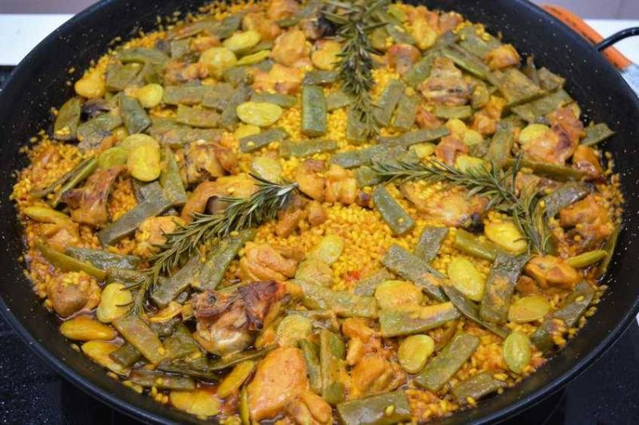
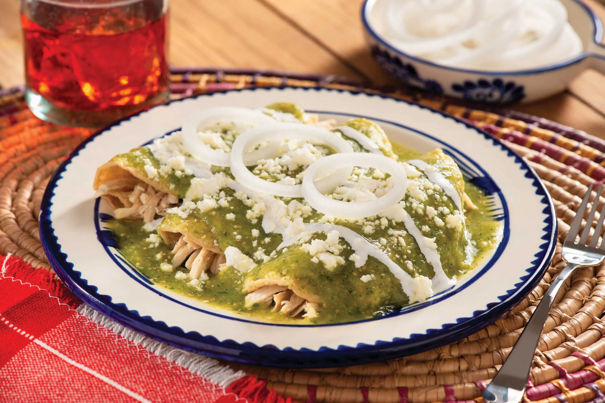
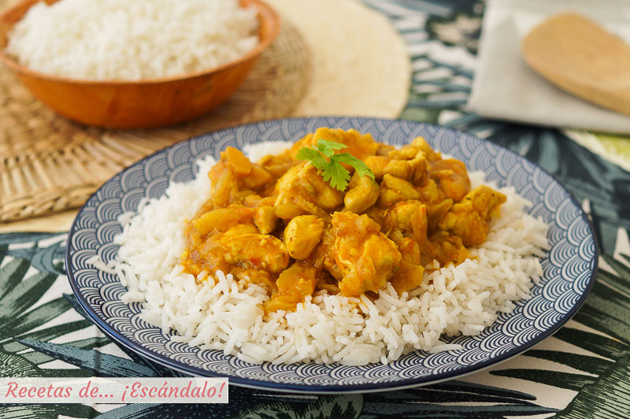
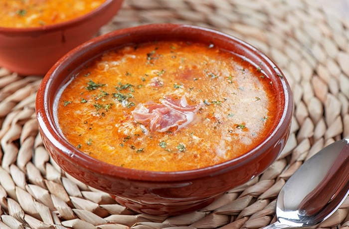

¿QUE RECETA QUIERES PROBAR HOY?

Paella Valenciana
Ingredientes:
400 g de arroz
800 ml de caldo de pollo o pescado
200 g (cada uno) de conejo y pollo troceados
150 g de judía verde (ferraura)
100 g de garrofón
2 tomates maduros
1 pimiento rojo
2 dientes de ajo
Aceite de oliva
Azafrán o colorante
Sal y pimienta
Pasos a Seguir:
Preparar el sofrito:
En una paellera amplia, calienta aceite de oliva y dora los trozos de pollo y conejo hasta que estén dorados por todos lados. Retíralos y resérvalos.
Cocinar las verduras:
En el mismo aceite, añade las judías verdes y sofríelas hasta que estén tiernas. Añade el pimiento cortado en tiras, los ajos picados y el tomate rallado. Cocina todo junto hasta que el tomate se haya reducido.
Incorporar el arroz:
Añade el arroz a la paellera y mézclalo con el sofrito. A continuación, vuelve a incorporar la carne reservada.
Añadir el caldo:
Vierte el caldo caliente, asegurándote de que cubre todos los ingredientes. Añade el garrofón y el azafrán. Cocina a fuego medio durante 20 minutos sin remover, dejando que el arroz absorba todo el caldo.
Reposar y servir:
Una vez cocido el arroz, retira del fuego y deja reposar unos minutos antes de servir. ¡Listo para disfrutar!

Enchilada Verde
Ingredientes:
12 tortillas de maíz
500 g de pechuga de pollo cocida y desmenuzada
400 g de tomatillo
2 chiles serranos
1 diente de ajo
½ cebolla
200 g de crema
200 g de queso fresco desmenuzado
Aceite vegetal y Sal
Pasos a Seguir:
Preparar la salsa::
Cocina los tomatillos y los chiles en agua hirviendo durante unos 5 minutos. Una vez cocidos, licúalos junto con la cebolla, el ajo y un poco de sal hasta obtener una salsa homogénea.
Freír las tortillas:
Calienta un poco de aceite en una sartén. Pasa rápidamente las tortillas por el aceite caliente para suavizarlas sin que se doren demasiado. Resérvalas.
Ensamblar las enchiladas:
Rellena cada tortilla con el pollo desmenuzado y enrolla. Coloca las enchiladas en un plato grande.
Servir:
Cubre las enchiladas con la salsa verde caliente, añade crema y queso fresco por encima. Sirve acompañadas de frijoles refritos o arroz.

Pollo al Curry con Arroz Basmati
Ingredientes:
500 g de pechuga de pollo
1 cebolla grande
2 dientes de ajo
1 trozo de jengibre fresco (2 cm)
2 cucharadas de curry en polvo
400 ml de leche de coco
300 g de arroz basmati
Aceite vegetal
Sal y pimienta
Pasos a Seguir:
Preparar los ingredientes:
Pica finamente la cebolla, el ajo y el jengibre. Corta el pollo en cubos medianos.
Sofreír el pollo:
En una sartén grande, calienta aceite y sofríe el pollo hasta que esté dorado. Retíralo y resérvalo.
Hacer la salsa:
En la misma sartén, añade la cebolla, el ajo y el jengibre. Cocina hasta que estén dorados. Añade el curry en polvo y mezcla bien. Incorpora la leche de coco y cocina a fuego lento durante 10 minutos.
Cocinar el arroz:
Mientras tanto, hierve el arroz basmati en agua con sal siguiendo las instrucciones del paquete.
Finalizar el curry:
Añade el pollo dorado a la salsa de curry y cocina todo junto unos 10 minutos más. Sirve el curry de pollo sobre el arroz basmati.

Sopa de Ajo
Ingredientes:
8 dientes de ajo
150 g de pan duro (preferiblemente del día anterior)
1 litro de caldo de pollo
4 huevos
100 g de jamón serrano en taquitos
1 cucharada de pimentón dulce
Aceite de oliva
Sal y pimienta
Pasos a Seguir:
Preparar los ingredientes:
Pela los dientes de ajo y córtalos en láminas finas. Corta el pan en rebanadas finas o en trozos pequeños.
Freír el ajo:
En una cazuela grande, calienta un buen chorro de aceite de oliva y sofríe los ajos a fuego lento hasta que estén dorados, cuidando de que no se quemen, ya que esto podría amargar la sopa.
Añadir el pimentón y el pan:
Una vez dorados los ajos, añade el pimentón dulce y remueve rápidamente para que no se queme. Luego, agrega el pan y sofríelo junto al ajo durante unos minutos.
Incorporar el caldo:
Vierte el caldo de pollo caliente sobre la mezcla de ajo y pan. Cocina a fuego lento durante 15 minutos, dejando que el pan se deshaga parcialmente y la sopa espese ligeramente.
Añadir los huevos y jamón:
Mientras la sopa sigue cocinándose, añade los taquitos de jamón serrano. Luego, rompe los huevos directamente sobre la sopa y cocina durante unos minutos más hasta que las claras se hayan cuajado, pero las yemas aún estén algo líquidas.
Servir:
Sirve la sopa bien caliente, con un poco de pimienta recién molida y, si se desea, un chorrito de aceite de oliva virgen extra. Es perfecta para días fríos o como entrante en una comida especial.
Tiramisú
Ingredientes:
500 g de queso mascarpone
4 huevos
100 g de azúcar
200 g de bizcochos de soletilla
1 taza de café fuerte
50 ml de licor Amaretto
Cacao en polvo
Pasos a Seguir:
Preparar la crema:
Separa las yemas de las claras. Bate las yemas con el azúcar hasta obtener una mezcla espumosa. Añade el queso mascarpone y mezcla suavemente.
Montar las claras:
Bate las claras a punto de nieve e incorpóralas con movimientos envolventes a la crema de mascarpone.
Montar el tiramisú:
Mezcla el café con el Amaretto. Moja los bizcochos en la mezcla y colócalos en la base de un molde. Cubre con una capa de crema de mascarpone. Repite hasta terminar con una capa de crema.
Refrigerar:
Deja el tiramisú en la nevera durante al menos 4 horas. Antes de servir, espolvorea con cacao en polvo.